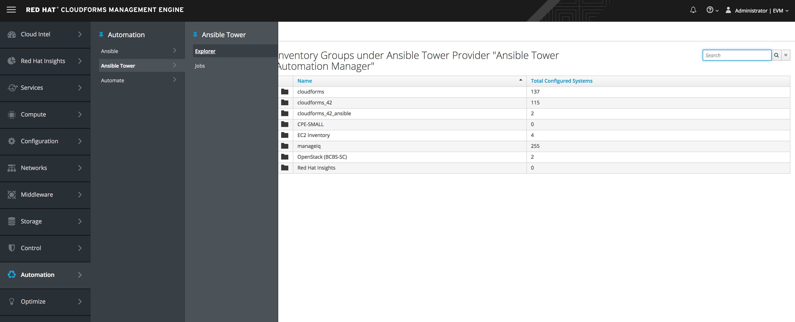
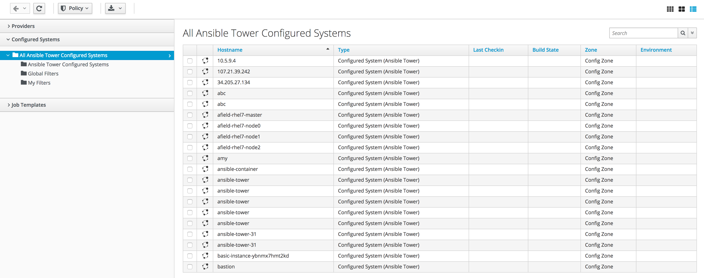
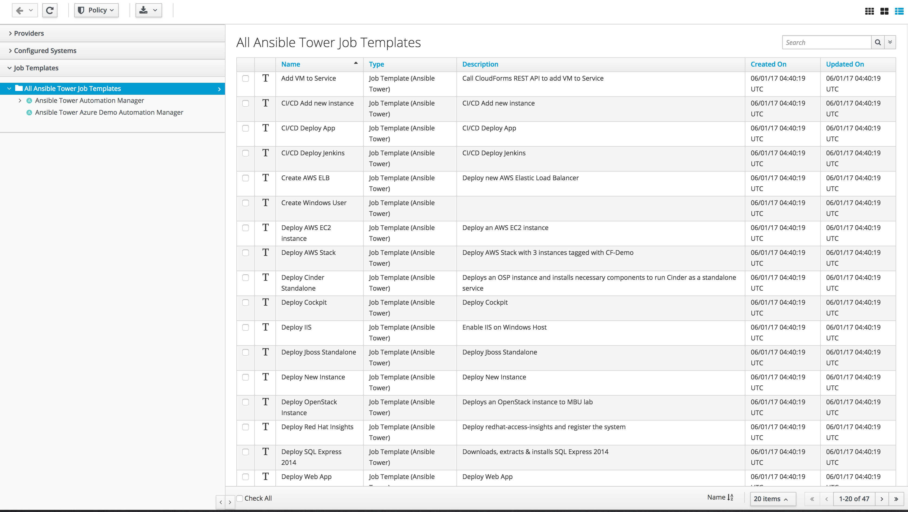
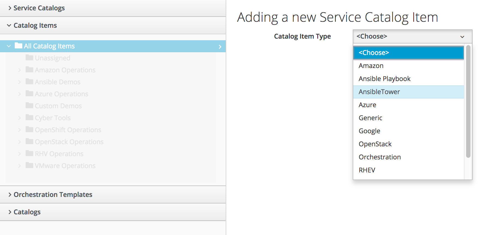
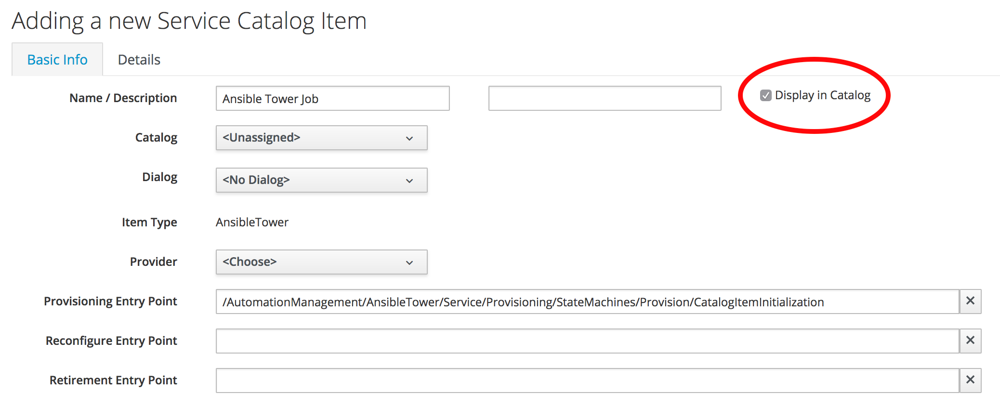
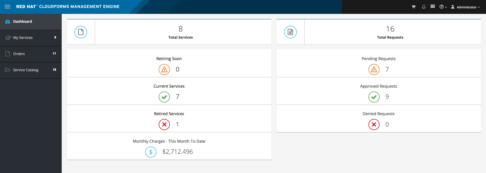
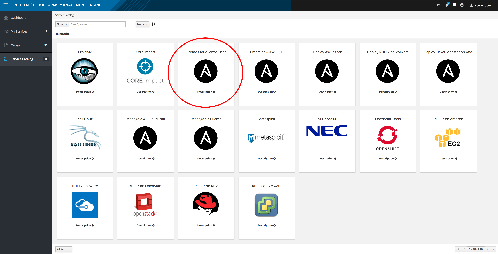
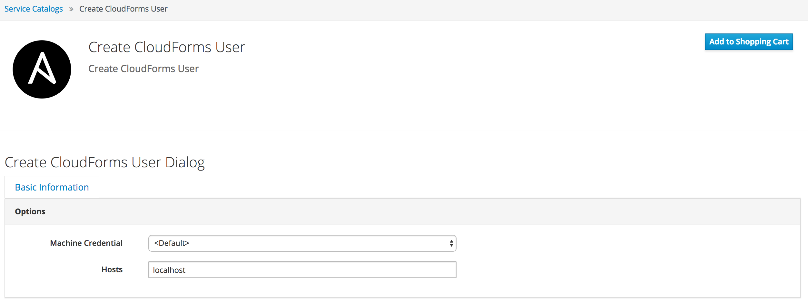
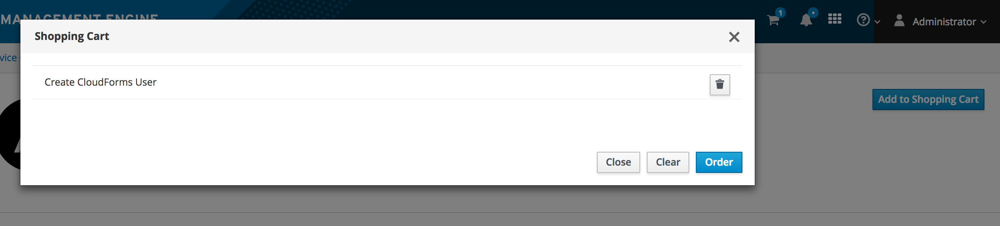

Ansible Tower is a management tool integrated with Red Hat CloudForms, designed to help automate infrastructure operations. Red Hat CloudForms allows you to execute Ansible Tower jobs using service catalogs and Automate. No custom configuration or Ruby scripting is needed in Red Hat CloudForms, as configuration is done in Ansible Tower using playbooks.
You can use the large library of existing Ansible playbooks as Red Hat CloudForms state machines to automate tasks such as backups, package updates, and maintenance in your Red Hat CloudForms environment. This also includes deploying Red Hat Satellite agents on bare metal machines as required. This can be particularly useful for quickly applying changes across large environments with many virtual machines or instances. Using Ansible Tower, you can schedule Ansible playbook runs and monitor current and historical results, allowing for troubleshooting or identification of issues before they occur.
| The basic workflow when using Red Hat CloudForms with an Ansible Tower provider is as follows: | |
|---|---|
| 1. Create an Ansible playbook which performs a specific task. | |
| 2. A new Ansible Tower job template is created from the playbook, which is then retrieved by Red Hat CloudForms. | |
| 3. From the Ansible Tower job template, create a new catalog item in Red Hat CloudForms, optionally with a service dialog that allows the user to enter parameters if needed. | |
| 4. The user orders the service from the Red Hat CloudForms user interface, and fills out any additional arguments (for example, limiting the task to run on a specific set of virtual machines). | |
| 5. The job executes. |
Automate / Ansible Tower / Explore

Red Hat CloudForms automatically updates its inventory from Ansible Tower. This includes system groups (known as Inventories in Ansible Tower), basic information about individual systems, and available Ansible Tower job templates to be executed from the service catalog or Automate.
| 1. Navigate to Automation → Ansible Tower → Explorer and click on the Providers accordion tab. | |
| 2. Under Configuration, click Add a new Provider. | |
| 3. In the Add a new Provider area: | |
| 4. Select the Verify Peer Certificate checkbox if desired. | |
| 5. In the Credentials area, provide the Username and Password, and Confirm Password. | |
| 6. Click Validate to verify credentials. | |
| 7. Click Add. |
Select your Ansible Tower provider to expand and list the inventory groups on that Ansible Tower system. The inventory groups can be expanded to view the systems contained within each group, as well as configuration details for these systems.

You must first create the job template in Ansible Tower. The job templates are automatically discovered by Red Hat CloudForms when refreshing your Ansible Tower provider’s inventory.

You can execute an Ansible Tower playbook from Red Hat CloudForms by creating a service catalog item from an Ansible Tower job template.
Services / Catalog / Catalog Items

Now you can look at adding another Ansible Tower Playbook to the service catalog. When you check display in catalog your new service will show up in the self service catalog as a item a user can order.

To see the services that are in the service catalog, change the url to https://cf.db.redhatgov.io/self_service. By adding self_service to the end of the URL you will be directed to the user portal where you can order services from the service catalog.

Here we can see the Ansible Playbook for creating a new CloudForms user we viewed previously.

You can click on the playbook and see that there is basic info to fill out for the playbook and then you click order just like you are shopping on Amazon! Ansible Tower in the background will kickoff the playbook.


In this exercise you got a overview of the integration with Ansible Tower and how you can take any playbook and offer it up as a service item in CloudForms.